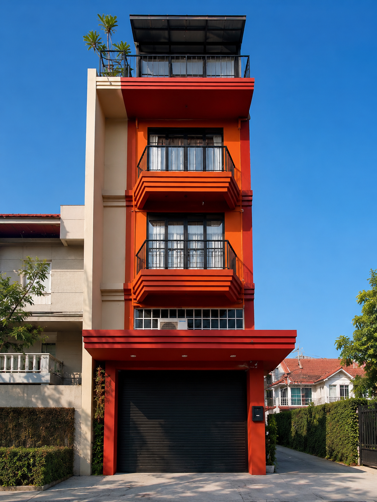
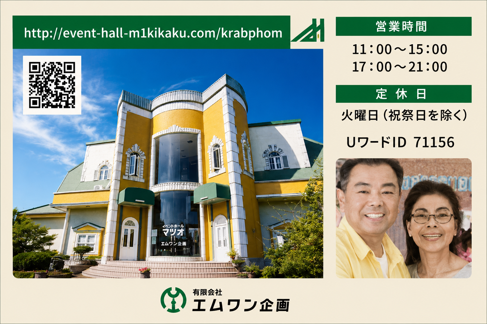

Thailand side
タイ側の拠点（M-ONE PROJECT） Thailand base ฐานงานในประเทศไทย
募集・面談・教育・出発準備 Recruitment, interviews, training and travel preparation รับสมัคร สัมภาษณ์ ฝึกอบรม และเตรียมเดินทาง
タイと日本を、一つの窓口でつなぐOne trusted window between Thailand and Japanเชื่อมไทยและญี่ปุ่นด้วยช่องทางเดียว
Thailand ↔ Japan
タイ側の募集・教育と、日本側の受け入れ・生活支援をスムーズにつなぎます。Recruitment and training in Thailand connect directly to reception and life support in Japan.เชื่อมการรับสมัครและฝึกอบรมในไทย กับการต้อนรับและดูแลชีวิตในญี่ปุ่น

募集・面談・教育・出発準備 Recruitment, interviews, training and travel preparation รับสมัคร สัมภาษณ์ ฝึกอบรม และเตรียมเดินทาง

受け入れ・生活立ち上げ・継続支援 Reception, settling in and ongoing support ต้อนรับ จัดการชีวิตเริ่มต้น และดูแลต่อเนื่อง
Our Staff
日本在住7年。生活立ち上げから行政手続きまで、入国後のタイ人スタッフの悩みや不安にタイ語で寄り添い、企業との調整を行います。 Living in Japan for 7 years. She supports incoming Thai workers with official procedures, housing setup, and translates work duties clearly. อาศัยอยู่ในญี่ปุ่น 7 ปี คอยช่วยเหลือด้านเอกสารราชการ การตั้งถิ่นฐาน และเป็นสื่อกลางแปลประสานงานกับบริษัทญี่ปุ่น
タイの教育機関での指導経験8年。単なる暗記ではなく、現場での挨拶、対話、ビジネスマナーなど「現場で本当に通じる会話力」を教えます。 8 years of teaching experience in Thailand. She focuses on practical spoken Japanese, manners, and workplace communication habits. ประสบการณ์สอนในไทย 8 ปี เน้นสอนภาษาญี่ปุ่นเพื่อการใช้งานจริง มารยาทในที่ทำงาน และการสื่อสารที่เป็นประโยชน์
外国人材受け入れにかかわる在留資格認定証明書（CoE）申請や特定技能の複雑な公的申請書類の作成を、最初から最後までスムーズに監修します。 Oversees the complex processes of Certificate of Eligibility (CoE) applications and technical intern visa procedures from end to end. ควบคุมดูแลขั้นตอนการขอหนังสือรับรองสถานภาพการพำนัก (CoE) และเอกสารวีซ่าที่ซับซ้อน ตั้งแต่เริ่มต้นจนเสร็จสมบูรณ์
Support Lines
タイ人生活支援員直通。病気、怪我、近隣トラブル、災害発生時の緊急通報用窓口。 Direct line to Thai support staff. Call for illness, injury, neighbor issues, or natural disasters. สายด่วนติดต่อเจ้าหน้าที่ช่วยเหลือชาวไทย สำหรับกรณีเจ็บป่วย บาดเจ็บ หรืออุบัติภัยฉุกเฉิน
タイ現地ご家族向け相談窓口。送金手配の確認や、日本側の健康状況確認に対応します。 For families in Thailand to check worker health status and confirm remittance procedures. ช่องทางสำหรับครอบครัวในไทย เพื่อสอบถามสถานะความเป็นอยู่หรือการประสานงานกรณีจำเป็น
管理責任者・松尾勲直通。業務連絡や予期せぬ欠勤・トラブル発生時の三者面談調整。 Direct line to lead coordinator Isao Matsuo for instant administrative and work-related support. สายด่วนติดต่อผู้จัดการระบบ อิซาโอะ มัตสึโอะ สำหรับนายจ้างกรณีประสานงานเรื่องงานเร่งด่วน
Collaboration Flow
日本本社で企業様の仕事内容を詳しくヒアリングし、在留資格申請に必要な提出書類のひな形を用意します。 Japan office gathers employer requirements and handles pre-filing immigration structures. สำนักงานใหญ่ในญี่ปุ่นศึกษาความต้องการของนายจ้างและจัดทำแนวทางและโครงสร้างเอกสาร
日本側の職務要件をタイ人選考スタッフに共有して候補者を募集。同時に日本語学習の進捗をクラウドで日本側と共有します。 Thai recruitment centers select candidates and synchronize Japanese learning progress via our secure databases. ศูนย์สรรหาในไทยคัดเลือกผู้สมัครและรายงานความคืบหน้าการฝึกภาษาญี่ปุ่นในระบบข้อมูลร่วม
入国日が決まった段階で、タイ側生活指導員がアパート環境、市役所窓口手配、出迎えスケジュールを日本側と完全同期します。 Prior to departure, staff synchronize airport pickups, local ward registrations, and dormitory setups. ก่อนเดินทาง ทีมงานร่วมตรวจสอบการรับที่สนามบิน ทะเบียนอำเภอ และการเตรียมที่พักพร้อมสิ่งจำเป็น
Cultural Hub
有限会社エムワン企画が自社経営する「タイ料理カポン」は、日本のお客様にタイの本場の味を伝えるレストランであると同時に、働くタイ人スタッフたちの強力な心のオアシスです。
毎月、地域で働くタイ人たちが集まり、タイの伝統料理を囲む食事会を開催しています。日本生活での悩みをタイ語で分かち合い、元気を注入して翌日からの仕事に臨める大切な「居場所」を維持しています。
Owned and operated by M-One Kikaku, Capon is more than a restaurant serving authentic Thai cuisine to Japanese guests. It serves as an essential social hub where Thai residents meet, share home-cooked meals, and discuss daily life in their own language. This community helps candidates stay positive and active.
ร้านอาหารไทยกะเพราซึ่งดำเนินงานโดยเอ็มวัน คิคาคุ ไม่ใช่แค่สถานที่เสิร์ฟอาหารไทยแก่ลูกค้าชาวญี่ปุ่น แต่เป็นศูนย์กลางที่แรงงานไทยจะได้มาพบปะ รับประทานอาหารรสชาติบ้านเกิด และพูดคุยแบ่งปันชีวิตในภาษาของตนเอง ช่วยเสริมสร้างพลังใจในการใช้ชีวิตและการทำงานในญี่ปุ่น
Start with a conversation
採用を検討中の企業様も、日本で働きたい方も、相談窓口からお気軽にどうぞ。Companies considering hiring and people seeking work in Japan are welcome to start with a conversation.ทั้งบริษัทที่กำลังพิจารณารับสมัครและผู้ที่ต้องการทำงานในญี่ปุ่น สามารถเริ่มต้นปรึกษาได้